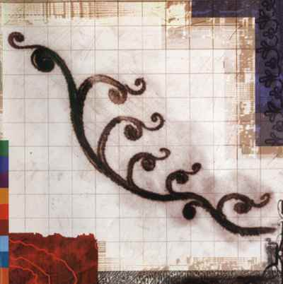
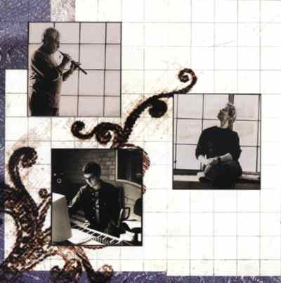

Djivan Gasparyan & Michael Brook
[credits] [tracks] [notes]
| Credits |

Real World Records,
7 September 1998 (UK)
Djivan Gasparyan: duduk, lead vocals
Michael Brook: infinite guitar, bass, keyboard, programming
Richard Evans: guitar, bass, keyboard, programming
Jason Lews: drums, percussion
Roel Van Camp: accordion
Produced by Michael Brook with a lot of input from Richard Evans
Mixed by Michael Brook and Richard Evans
Engineered by Richard Evans; additional engineering by Jacquie Turner;
additional assistance by Wendy Levin
Recorded at the ACATIFE studio in Lanzarote ('the Black Rock') in October '97
and at Real World Studios, Box, England
Mixing and additional recording at Hybrid Studios, LA, USA
Mastered by Ron McMaster at Capitol Mastering, LA, USA
A Real World Design
Cover image & graphic design by Tristan Manco
Art direction by Michael Coulson
Photography by Christina Piza
Additional photography and art direction by Martha Ladly
Lyric translations by Narine Gasparyan
| Tracks | [back to top] |
To The River (Gasparyan, Brook) 4'09
Fallen Star (Gasparyan, Brook) 4'49
Take My Heart (Gasparyan, Brook) 4'34
Together Forever (Gasparyan, Brook, Evans) 6'49
Freedom (Gasparyan, Brook) 5'26
Forbidden Love (Gasparyan, Brook) 5'39
Immigrant's Song (Gasparyan, Brook) 6'56
Dark Souls (Gasparyan, Brook) 5'26
total duration: 44'11
| Notes | [back to top] |
A review by Richard Peat
Brook сыграл вторую роль только на трех дорожках, "To The River", "Freedom" и "Dark Souls", где дудук и голос Дживана подчеркнуто выдвинуты вперед. Но что сказать о других пяти трэках? Да, они должны послать фэнов Brook в аут, потому что роли полностью меняются и уже Гаспарян занимает гостевое кресло в нескольких фантастических композициях Brook.
После экспериметов в Dream и Albino Alligator, Brook вернулся к звуку и стилю Cobalt Blue. Фирменная бесконечная гитара Brook и стиль клавишных очень искусно сплавлены вместе на фоне очевидных изменений темпа. Использованные здесь акустические перкуссии придают записям большую глубину.
На мой вкус, самый выдающийся трэк - это длящийся более 6 минут "Together Forever", где музыка замедляясь развивается и выстраивает слои к потрясающему крещендо.
Хотя этот альбом сольная работа Гаспаряна и Brook, фактически в сотрудничестве есть и третий важный участник, английский мульти-инструменталист Richard Evans, который играл на гитаре, басу, клавишных и программировал, а также продюссировал и микшировал все дорожки вместе с Brook. Альбом предсказывает приход великих вещей.
Liner Notes
Канадец Michael Brook в качестве продюсера, инженера и гитариста-виртуоза украсил альбомы нескольких наиболее прославленных и авангардно-мыслящих артистов прошедшего десятилетия. Его собственная музыка, рожденная любовью к мелодиям Среднего Востока и Индии, представляет сложный гибрид этнических и электронных элементов; ее несомненные визуальные качества были признаны многими режиссерами, которым Michael писал музыку.
Этой записью Дживан Гаспарян и Michael Brook продемонстрировали уникальный музыкальный гибрид. Дудук играет заметную роль, как и ожидалось, но подлинным сюрпризом явились до сих пор не прославленные вокальные способности Гаспаряна; его вибрирующее и уверенное пение, тембральный колорит уверенно соединяются с теплым, слегка носовым тоном дудука. Оба инструмента представлены так, чтобы наиболее ярко звучать поверх разнообразных аранжировок, созданных и исполненных Brook с помощью английского инженера и мульти-инструменталиста Richard Evans.
To the River Песнь рыбака. "Мои руки мокры от крови и пота, но я работаю, чтобы продать рыбу и купить хлеб. Луна светит и ночь темна, но я вхожу в воду с сетью в руках."
Dark Souls Два путешественника в лохмотьях говорят один другому: "Мы любили, но в наших душах печаль. Нам нравилось путешествовать и мечтать и плыть по звездам Млечного Пути. Наше детство вело нас сквозь звезды, наше печальное детство, которое было безутешно. Жизнь была наполнена поиском и несла нас как мечта. Я хочу воспеть хвалу Господу и хвалу жизни, но мое сердце заполняет печаль и я пою песню наших тяжелых, мрачных дней. Никто не понял нас в этой жизни и свет ни разу не проник в наши темные души. Жизнь стала неутешительным бредом."
Take My Heart Любовная песня: "Жаль, что ты не цветок в моем саду. Жаль, что ты не птица, летающая в моем саду. Жаль, что тебя нет со мной, моя любовь. Оставайся со мной, не причиняй мне так много боли. Забери мое сердце с собой, если хочешь, только не оставляй меня, пожалуйста. Оставайся со мной и я сделаю все для тебя."
Together Forever Другая любовная песня. "Я не знаю, куда ведет эта дорога, но я сижу здесь и жду тебя. Я молюсь за тебя, моя любовь. Когда наступит хороший день? Где ты? Я знаю, что мы будем вместе навсегда. Ты придешь и принесешь новое счастье в мое мрачное сердце. Я тоскую по тебе, моя любовь."
Freedom Гимн независимости. Человек смотрит на гору Арарат и мечтает достичь своей родины, но черные облака скрывают его путь домой. "Твои холодные воды так дороги мне, дай мне напиться твоей холодной воды в память наших дедов. Я люблю твои высокие горы. Мы будем бороться за твою свободу, моя дорогая родина, в память наших дедов."
Fallen Star Песня матери. Она плачет над телом мертвого сына, который погиб смертью героя, защищая свою родину. "Плачьте со мной пурпурные цветы, плачьте со мной холодные ветра. Эта яркая моя звезда упала, небо скрыли темные облака. Я осталась одна в этом мире. Мой храбрый сын получил горячую пулю прямо в сердце, вместо жаркого поцелуя его любимой."
Forbidden Love Бард, музыкант во дворце султана, любит дочь султана. Но это недопустимо и султан хочет приговорить его к смерти. "Ты - золотая чаша, полная воды бессмертия для меня. Твои губы - алмазы, твой язык - сахар. Ты - все для меня. Ты возникла из моря огня и превратила мои слезы в кровь. Дай им убить меня, потому что я все еще люблю тебя, моя прекраснейшая. Ничего больше не осталось для меня в этом мире."
Immigrant's Song "Бесконечно долго идет мой караван через чужие земли. Приведи меня в родимый край - землю солнечного света, где звучат песни, где всегда весна."
